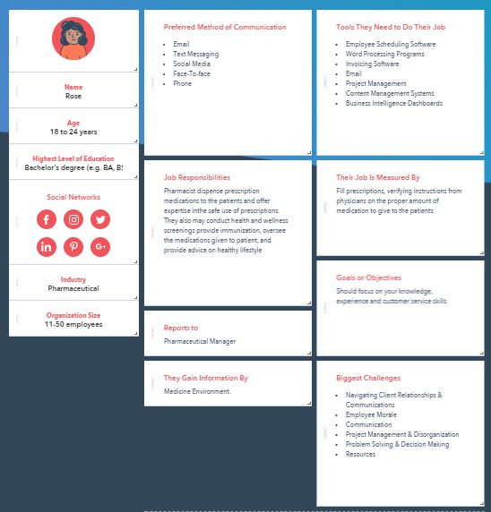
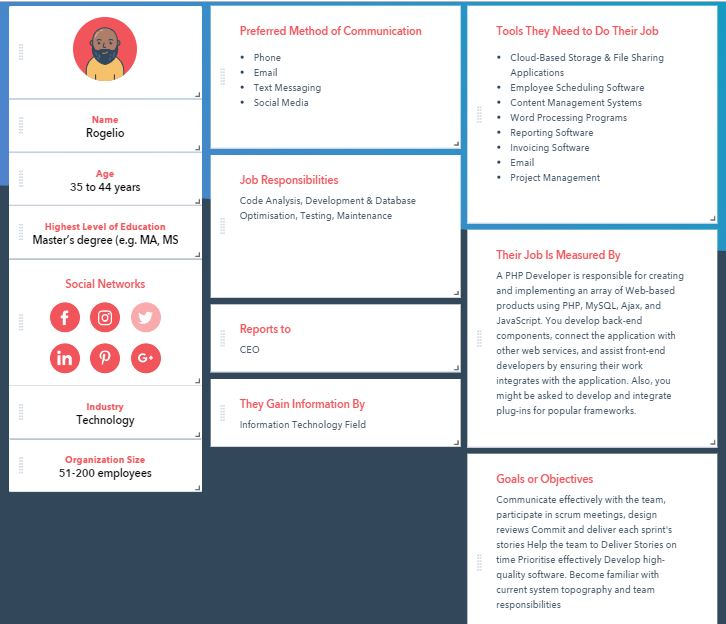

Persona # 1
Zach Smith is a marketing manager are responsible for planning, developing, implementing and monitoring the overall business strategy. He is more on reporting on software, word processing programs, needed to overview hundreds of files and documents throughout the week, and navigating client relationships and communication. Zach eyes are restlessly focused on the emails, and paper works which he also spends his time doing his work. Because of that, he doesn’t have much time doing his personal things. As years passes by, he noticed that his vision is getting worse. Since he’s really committed on his work can’t leave a day on it, he uses an online application called seedway. He registered online and found the nearest clinic around him. He booked an appointment on his free time. The application helps him a lot because of the convenience.

Persona # 2
Rose is a new beginner as a Pharmacist. She is a millennial with a bachelor’s degree. Her job is responsible for creating and implementing an array of Web-based products using PHP, MySQL, Ajax, and JavaScript. You develop back-end components, connect the application with other web services, and assist front-end developers by ensuring their work integrates with the application. One of her biggest challenge on her work is Navigating Client Relationship & Communications.

Persona # 3
Rogelio is a Senior PHP Developer for 10 years. He is responsible for the code analysis, development & Database, Optimization, and Testing and Maintenance. He is responsible for creating and implementing an array of Web-based products using PHP, MySQL, Ajax, and JavaScript. You develop back-end components, connect the application with other web services, and assist front-end developers by ensuring their work integrates with the application. Rogelio used the app that he found on the advertisement of one of his social media accounts. He registered via email, fin a nearest clinic, booked an appointment, and waiting for the clinic to verify his appointment. For Rogelio’s perspective, he conveniently uses the application that save his time because most of his hours are allocated on his job which he is very dedicated to.